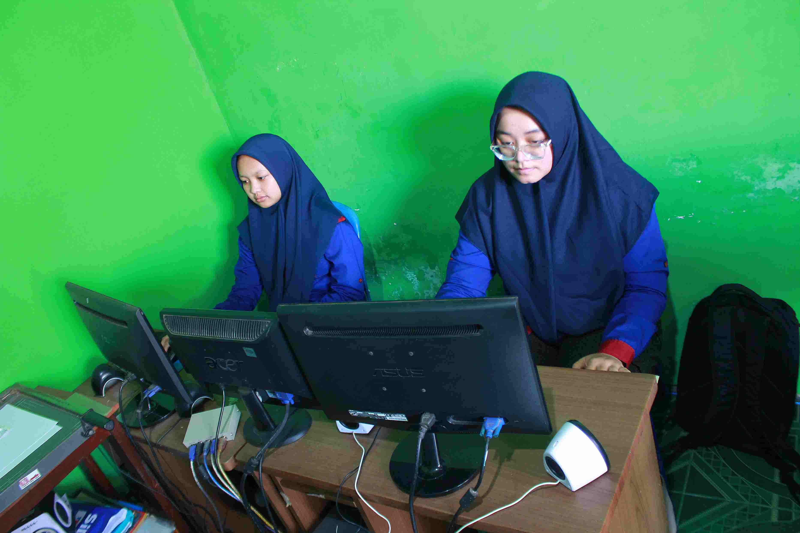

HULWATIN WEB
PROFIL PENULIS
Nama : Hulwatin Nadiroh
Alamat : Gedangan
IG : hulwatin_nadiroh
Umur : 18 tahun
BELAJAR DI YAYASAN IDM

Saya Hulwatin Nadiroh bisa dipanggil Hul, Hulwa, atau Wawa. Saya dari Malang Selatan, sekolah di SMK PGRI Sumbermanjing. Saya belajar di Yayasan IDM ini sangat menyenangkan bagi saya. Disini saya belajar banyak tentang software dan hardware. Tidak hanya itu di sini saya belajar membuat WEB.
TENTANG PENULIS
Saya suka membaca komik dan kuliner karena dengan membaca komik ini saya tidak bosan dalam keseharian. Membaca komik menyenangkan.
ISI ARTIKEL KAKI
Dibuat oleh : HULWATIN NADIROH